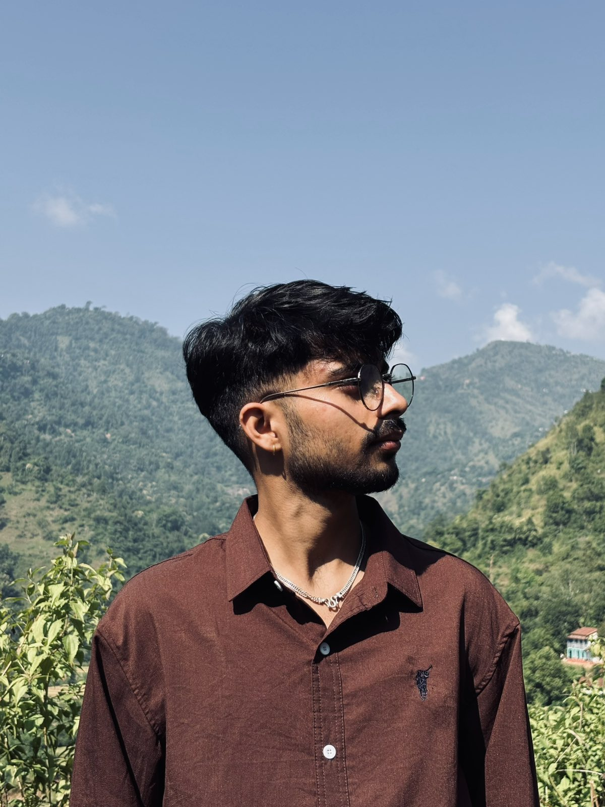

EDUCATIONBSc Computer Science & ITUndergraduate student
AVAILABLE FOR LEARNING & OPPORTUNITIES
Building digital
experiences
through code.
Hey, I'm Sumit Neupane — a curious computer science student who enjoys turning ideas into useful, thoughtful digital experiences.
I am a Web Developer|
● ● ●PROFILE / 001

Sumit Neupane
Developer in progress
⌘ BUILD◎ EXPLORE✳ CREATE
⌘ Clean code
◎ Curious mind
DESIGN · DEVELOP · LEARNA LITTLE ABOUT MY FOCUSCuriosity drives me. Code gives me a way to build.✳
01 / GET TO KNOW MEA bit about
A bit about
myself.
I'm a BSc CSIT student from Nepal, passionate about technology and the possibilities it creates.
I enjoy exploring web development, networking, and programming — learning how things work and using that knowledge to create practical solutions. My journey is built around curiosity, consistent learning, and the belief that every project is an opportunity to get better.
Whether I'm shaping a user interface, working through backend logic, or exploring a new tool, I aim to build with purpose and keep improving one step at a time.
Have a project in mind? ↗LOCATIONNepalGandaki Province
CURRENT MINDSETAlways learningOne project at a time
02 / WHAT I WORK WITHTools of the
Tools of the
trade.
A growing toolkit across the technologies I use, study, and explore.
Frontend
Interfaces & experiences
HTML · CSS · JavaScript · React.js · Bootstrap
Backend
Server-side development
Node.js · Express.js · PHP · ASP.NET Core
Programming
Languages & logic
C · C++ · Java · Python · C#
Database
Data & persistence
MySQL · PostgreSQL · MongoDB
Tools
Daily workflow
Git · GitHub · VS Code · Visual Studio · Postman
03 / SELECTED WORKThings I've
Things I've
worked on.
A selection of academic and personal projects exploring real-world problems.
PROJECT / 01
01
Plant Selling System
A multi-vendor marketplace that brings plant buyers and sellers together in one place.
PROJECT / 02
02
SewaBot
An AI-powered citizen helpdesk concept for verified public-service information in Nepal.
PROJECT / 03
Find your next opportunity.
03
WorkAt — Job Portal
A recruitment platform concept connecting job seekers with companies through organized listings and applications.
04 / MY JOURNEY SO FARLearning, growing &
Learning, growing &
connecting.
⌂ EDUCATION
UNDERGRADUATE
Bachelor of Science in Computer Science and Information Technology
Currently pursuing BSc CSIT. Add your college name and study period here.
IN PROGRESS✧ ACHIEVEMENTS & COMMUNITY◎ ✧ ⌘
HamroCSIT College Ambassador
01Student community involvement
IBM Student Ambassador
02Technology community engagement
GitHub Student Developer Pack
03Student developer resources
05 / LET'S CONNECTHave an idea?
Have an idea?
Let's talk.
I'm always interested in connecting with people, learning something new, and exploring meaningful opportunities.
Have a question, collaboration idea, or just want to say hello? Send me a message.
✉EMAIL MEsumit.neupane2062@gmail.com↗⌘GITHUBgithub.com/sumitneupane000↗